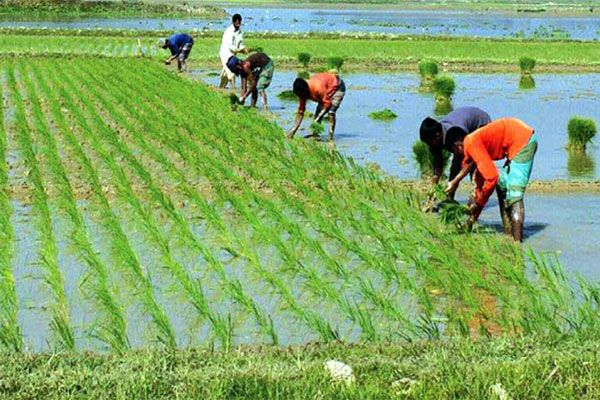
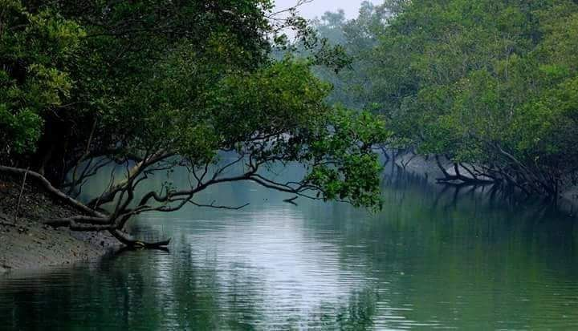
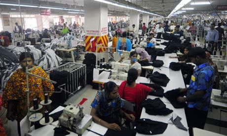
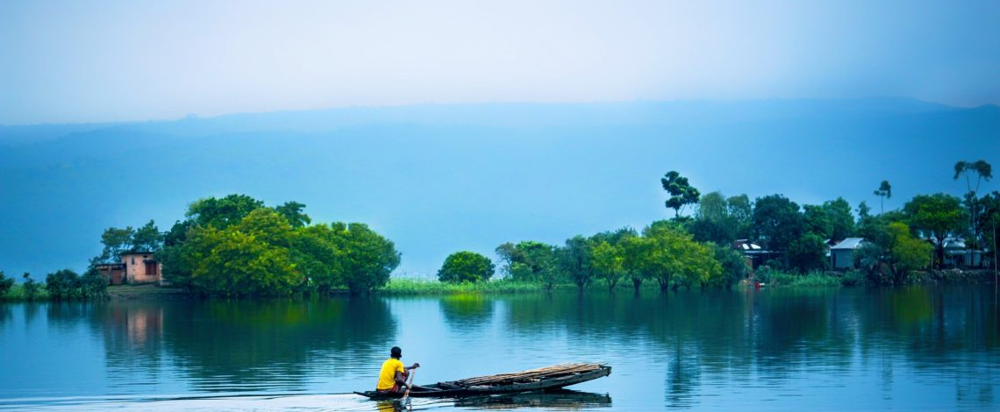

Geography and Climate
Bangladesh’s economy has seen significant growth in recent decades, driven by its thriving textile and garment industry, which is one of the largest in the world. Agriculture, particularly rice and jute production, also plays a key role in the economy, along with a growing service sector and remittances from overseas workers. The country has made strides in poverty reduction, infrastructure development, and improving healthcare and education. However, it still faces challenges such as income inequality, climate vulnerability, and the need for further industrial diversification. Despite these hurdles, Bangladesh is on track to become a middle-income country, with a focus on innovation and sustainability.




Bangladesh is a South Asian country situated on the fertile Bengal delta, bordered by India to the west, north, and east, and Myanmar to the southeast, with the Bay of Bengal to the south. Known for its extensive river systems, including the Ganges (Padma), Brahmaputra (Jamuna), and Meghna rivers, Bangladesh experiences frequent flooding due to its low-lying terrain. The country has a tropical monsoon climate, characterized by hot, humid summers, a rainy monsoon season (June to October), and mild winters. Its diverse geography includes coastal mangrove forests like the Sundarbans, hilly regions in the southeast, and the world's longest natural sea beach at Cox’s Bazar.